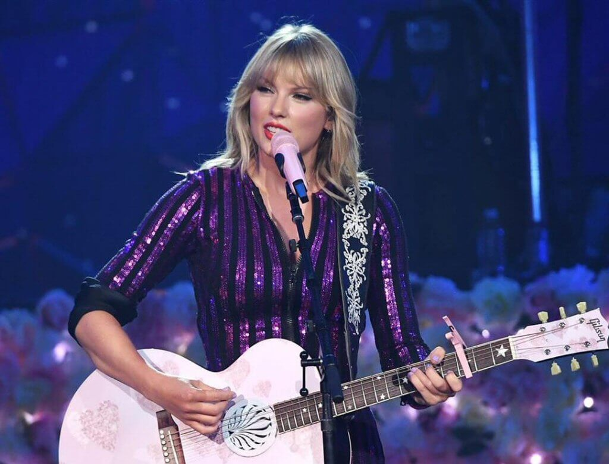

SOBRE/ABOUT
Taylor Alison Swift nasceu no dia 13 de dezembro de 1989 em Reading, Pensilvânia. É a filha mais velha do corretor da bolsa de valores Scott Swift e da dona de casa Andrea Swift, e foi criada ao lado do seu irmão mais novo, Austin Swift, em uma fazenda de cultivo de árvores de Natal na cidade interiorana de Reading, Pensilvânia.
Taylor Swift num concerto!
Características
- Alegre
- Inteligente
- Autoconfiança
- Alta
- Loira
- Olho Claro
Percuso de Carreira
Seu álbum de estreia autointitulado de 2006 se tornou o álbum mais longo dos anos 2000 a permanecer na parada de música da Billboard, a Billboard 200. Seu terceiro single, "Our Song", fez dela a cantora e compositora mais jovem a alcançar o número um na Billboard Hot Country Songs. O segundo álbum de estúdio de Swift, Fearless (2008), ganhou quatro prêmios Grammy e produziu os single "Love Story" e "You Belong with Me". Tornou-se o álbum mais vendido de 2009 nos Estados Unidos e foi certificado com disco de platina pela RIAA. O terceiro álbum auto-escrito de Swift, Speak Now (2010), gerou o single vencedor do Grammy "Mean", o álbum recebeu muitas avaliações positivas por parte da crítica musical, registrando uma média de 77 pontos de aprovação no agregador de resenhas Metacritic. Seu quarto álbum de estúdio, Red (2012), deu a ela seu primeiro single número um na Billboard Hot 100, "We Are Never Ever Getting Back Together".